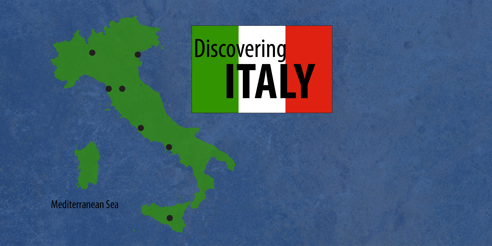
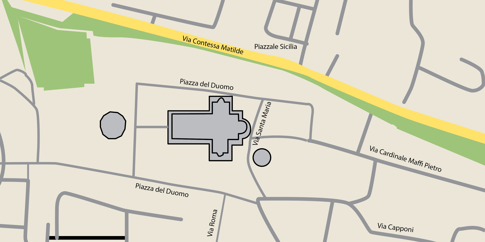
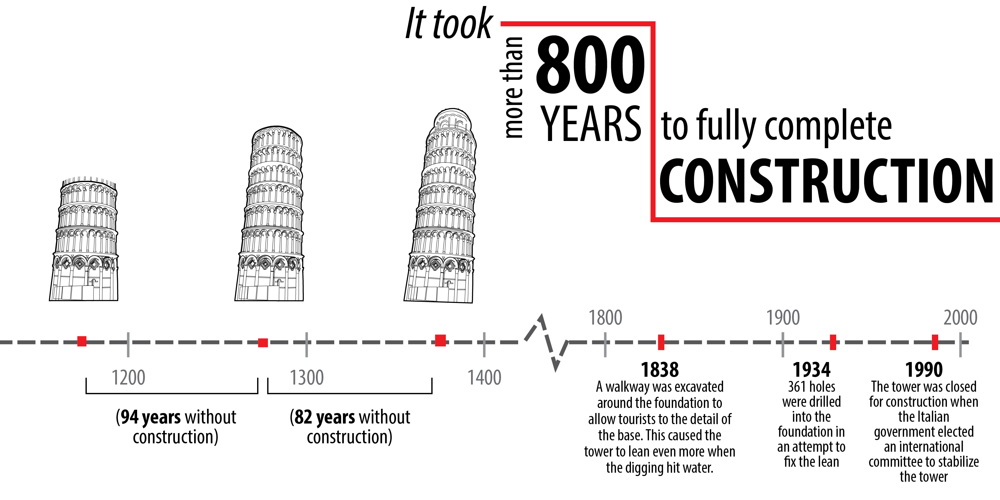
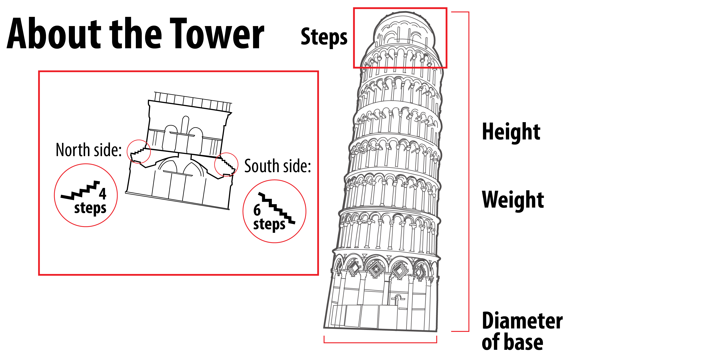
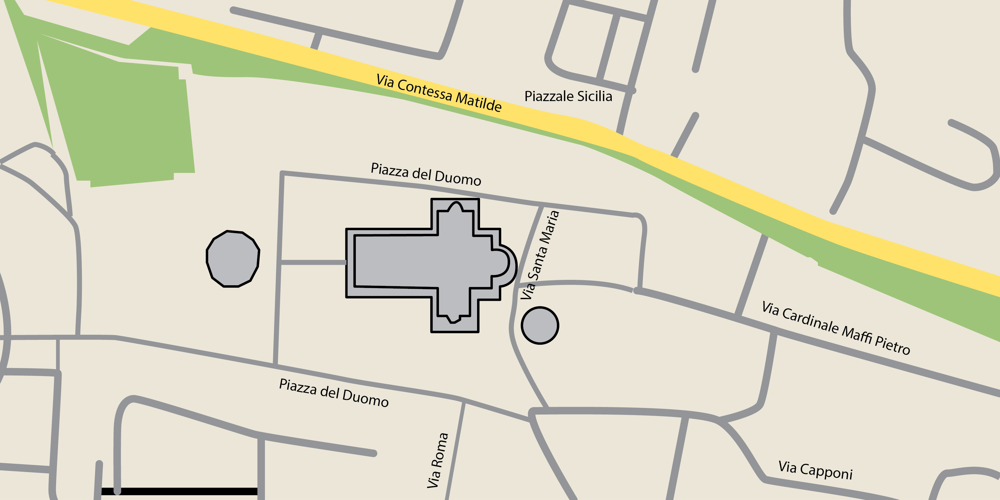

-

Citta italiane
Click the circles to discover Italian cities.
About Italy
Population: 58,742,000
Capital: Rome
Area: 301,333 square kilometers
Languages: Italian, German, French, Slovene
Currency: Euro
- 
Pisa
Click the circles to discover major monuments in Pisa.
The Baptistry
The Leaning Tower
The Cathedral
The Square of Miracles
Museum Sinopie
The Monumental Cemetery
The Fountain with Angels
- 
- 


Subsoil profile
Click the circles to discover the layers.
The water table in horizon A is 1 to 2 m below the ground. Pumping from the lower sand (in horizon C) has create downward seepage from horizon A. The average settlement of the Tower is approximately 3 m.
- 